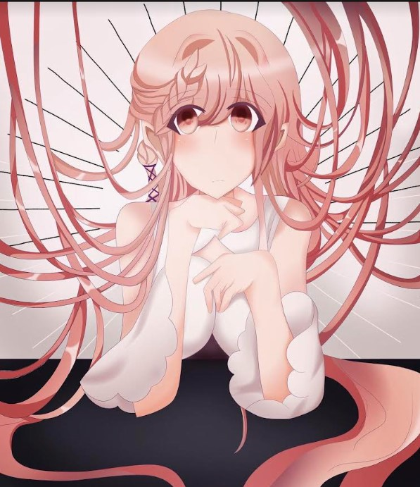
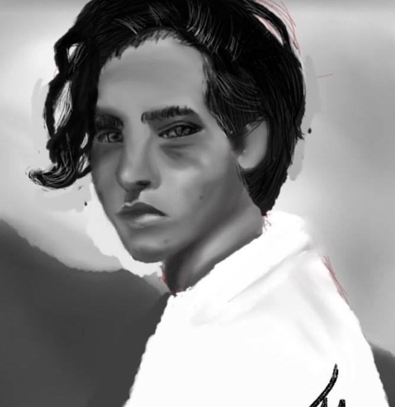
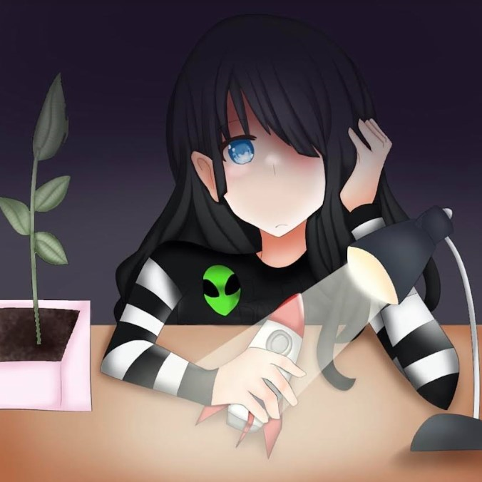
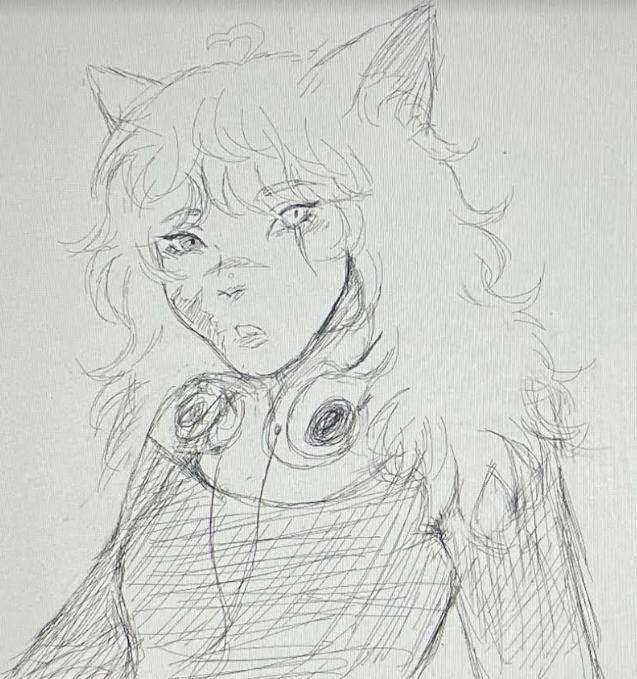
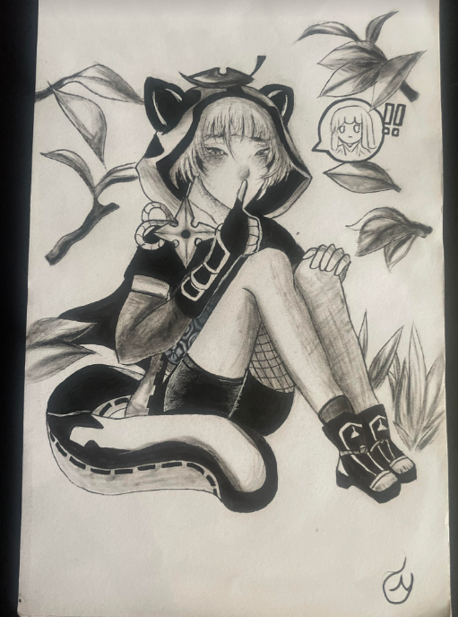
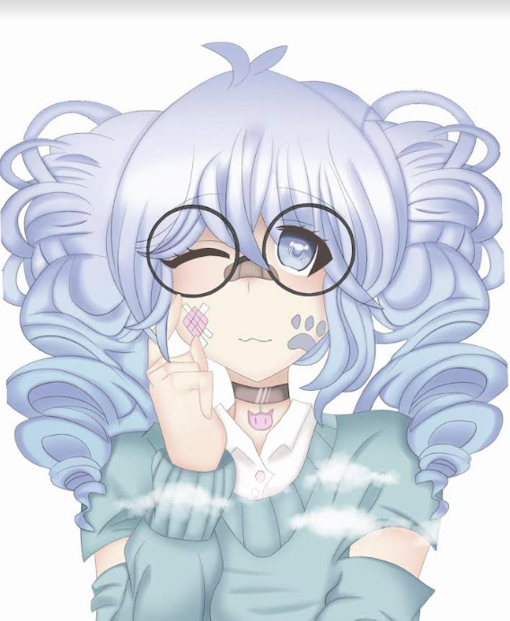
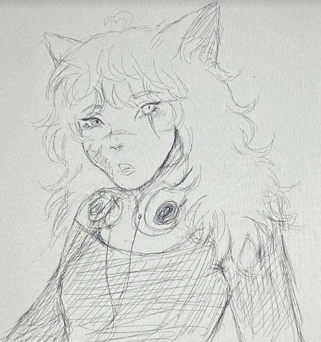
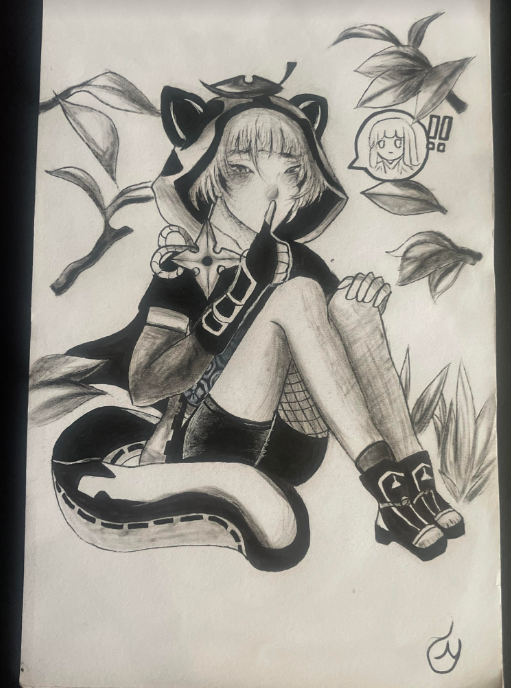
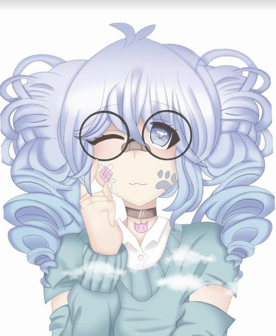

{}
Nyah Aguilera's Resume
About Me
Skilled artist and an experienced animator with an extensive background in various softwares, character design, as well as storyboarding. Looking to utilize my artistic skills, creative visions, and passion for storytelling through a role at your company.
Education
- Seminole State College of Florida Orlando, FL
- A.S Degree in Game Development Expected Graduation: 5/2026
Certificates
- Technical
- Digital Media
Experience
- Animal Hospital, June 2021- December 2021 Orlando, FL
- Veterinary Volunteer
- Created positive work environment
- Carried out assigned tasks efficiently and quickly
- Provided assistance when needed
- Babysitter, June 2019-July 2019 Orlando, FL
- Positive and clear communication to others
- Ability to lead and be a good example
- Able to remain calm during stressful situations and problem solve
- Winn-Dixie, August 2023-Present Orlando, FL
- Stocker
- Provided excellent customer service to others
- Great skills in organization
- Retail resetting, good work ethic



 




